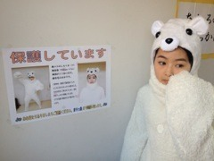

| 2013/03 14 Thu | 383回目*marika |
今日はあみとれなとロケが
ありました

はしゃいだはしゃいだ！
昼に終わったので
その後3人でご飯食べて
れなが途中で美容院のため
帰ったんだけど
あみと夜までお話しました。
ふぉーふぉー
喉が枯れてた←
永遠におしゃべりできそう
って思ったよ、あみ。
**********
 好きな少女漫画教えて～
最近、お気に入りの作品ある？
好きな少女漫画教えて～
最近、お気に入りの作品ある？
 たいようのいえ
たいようのいえ
となりの怪物くん
アオハライド
花と落雷
すきです。
昨日買った
星屑クライベイビー
紙に穴があくまでじっくり読もう...
しろくまりっくま先輩は
この個人PVについてなんか言ってた？
なんかけだるそうにしてたけど、
内心出演できて
めっちゃ嬉しかったみたいです
 笑
笑
笑
小説は読みますか？
読む。
これからは漫画と同じように
積極的に読もうと思う！
理想のロマンチックなデートは？
散歩
地味って思われがちだけど、
ロマンティックだと私は思う

助っ人は急にお願いされたの？
それともやることは決まっていたの？
急にお願いされました。
しかし...役に立てて良かったです！
 まだ見てない方のために
まだ見てない方のために
答えは言いません。さがしてね♪
ＰＶって何回くらいＮＧ出したの？
7回...くらい？
ケーキと定期...←
監督が違うと撮影の雰囲気とか
全然ちがったりするの？
全然違います。
すごい勉強になります。
ヘッドホンまりかの私物なの?
いえす
 万理華は古本買うの？
万理華は古本買うの？
それとも立ち読み？
気に入ったら買うけど、
主に立ち読み。
どんな色が好き？春と言えば何色？
欲張りだが、全色。
マイブームはいろんな緑。
くすんだ色もすき。
春は薄いピンクのイメージ
好きなドラマは何ですか？
SPEC
どんな妄想するのか、
よければ教えてください(^ω^)ﾆﾔﾆﾔ
果てしないロマンティック←
漫画何冊持ってる？
50冊くらいかな！
逆に少女漫画読む男の子って
どう思いますか？？
どう思う...？
読むのは恥ずかしいこと
ではないと思う！
5thでいちばん好きな楽曲は何？
君の名は希望
シャキイズムのＭＶで注目して
もらいたい場面はどこですか？
個人的にすきなのは
ラストのガラス越しの生駒。
モニターを見つめる風紀委員。
あ、まりおは掃除のシーンで
雑巾掛けしてます

まりおは生駒の友人です。
**********


まりか
コメント(222)
2013/03/14 22:18